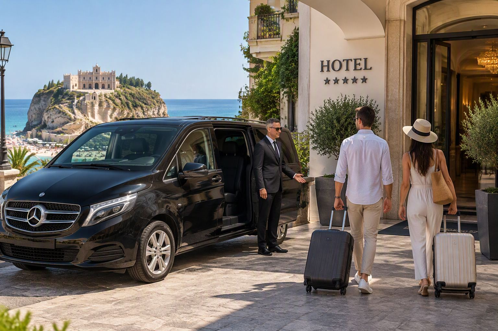

How to get to Tropea from Lamezia Terme airport

The easiest way to get to Tropea by plane is to land at Lamezia Terme airport, about an hour's drive away. From there you have several options: the right choice depends on how many of you are travelling, how much luggage you have and what time your flight lands. Let's look at them one by one.
Private transfer
This is the simplest solution. A driver waits for you at arrivals and takes you straight to your accommodation, with no changes and no hunting for parking. For families and small groups the cost per person often works out well, and the price is fixed and agreed before you travel.
Our transfer from Lamezia to Tropea also runs at night, for late arrivals.
Taxi
There are taxis outside the airport. For a long ride like this one, always ask for the price before getting in, to avoid surprises when you arrive.
Rental car
If you want to move freely between Tropea, Capo Vaticano, Pizzo and the inland villages, a car is the most flexible choice. In high season book well ahead, and remember that parking in the centre of Tropea is limited. You can also choose a scooter: you will find all the options on the rentals page.
Train and bus
From the airport you can reach Lamezia Terme station, where regional trains leave for Tropea. It is the cheapest way, but it involves a change, careful checking of timetables and a little patience with your suitcases.
How to get to Tropea: which option to choose?
- Arriving late, or with children and luggage? A private transfer is best.
- Want to visit lots of different places? A rental car is best.
- Travelling light on a tight budget? The train can work.
A tip before you leave
Whatever you choose, plan how you will get to Tropea before you travel: especially in August, finding transport at the last minute can be hard. Send us your flight number and the address of your accommodation and we will confirm everything quickly. Still looking for somewhere to stay? Have a look at our holiday homes between Tropea and Capo Vaticano.